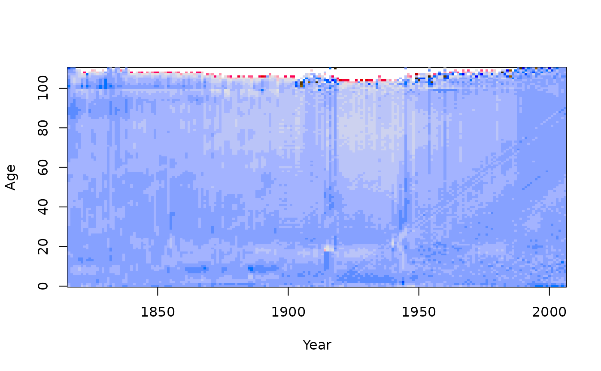

Fits a basis function model to demographic data. The function uses optimal orthonormal basis functions obtained from a principal components decomposition.
demogdata object. Output from read.demogdata.
name of series within data holding rates (1x1).
Number of basis functions to fit.
Ages to include in fit.
Maximum age to fit. Ages beyond this are collapsed into the upper age group.
Method to use for principal components decomposition.
Possibilities are “M”, “rapca” and “classical”. See
ftsm for details.
Tuning parameter for robustness when method="M".
If TRUE, will estimate mean term in the model before computing basis terms. If FALSE, the mean term is assumed to be zero.
If TRUE, will include an additional (intercept) term that depends on the year but not on ages.
If TRUE, the data are transformed with a Box-Cox transformation before the model is fitted.
Extra arguments passed to ftsm.
Object of class “fdm” with the following components:
Name of country
Ages from data object.
Years from data object.
Matrix of
demographic data as contained in data. It takes the name given by
the series argument.
Matrix of fitted values.
Residuals (difference between observed and fitted).
Matrix of basis functions evaluated at each age level (one column for each basis function). The first column is the fitted mean.
Matrix of coefficients (one column for each coefficient series). The first column are all ones.
Standard errors for the estimated mean function.
Proportion of variation explained by each basis function.
Weight associated with each time period.
Measure of variation for each time period.
Data type (mortality, fertility, etc.)
The data stored as a functional time series object.
Hyndman, R.J., and Ullah, S. (2007) Robust forecasting of mortality and fertility rates: a functional data approach. Computational Statistics & Data Analysis, 51, 4942-4956. http://robjhyndman.com/papers/funcfor
france.fit <- fdm(fr.mort)
summary(france.fit)
#> Functional demographic model
#>
#> Call: fdm(data = fr.mort)
#>
#> Region: FRATNP
#> Data type: mortality
#> Years in fit: 1816 - 2006
#> Ages in fit: 0 - 110
#>
#> Order: 6
#> Percentage variation due to basis functions: 93.8% 2.3% 1.6% 0.6% 0.4% 0.3%
#>
#> Averages across ages:
#> ME MSE MPE MAPE
#> -0.09913 0.05686 -Inf Inf
#>
#> Averages across years:
#> IE ISE IPE IAPE
#> 0.45441 0.73512 -1.66272 8.08544
#>
plot(france.fit)
plot(residuals(france.fit))
